Install QGIS-LTR
A Step-by-step guide for QGIS installation on Windows, Mac and Linux.
Install QGIS on Windows
Before you start: If you already have an older version of QGIS installed in your system, you need to uninstall it to avoid dependency related errors. To uninstall, see our uninstallation guide.
- Visit the QGIS.org Download page. On the page, you may donate or click on Skip it and go to download to see the download options.
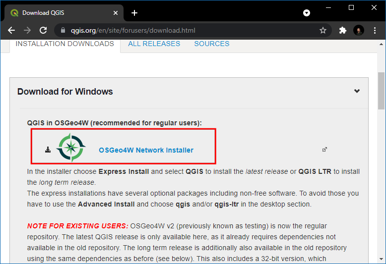
- Scroll-down to find the option Download for Windows. Click the OSGeo4W Network Installer. The OSGeo4W Network Installer is the preferred way to install QGIS because it ensures you get all the required dependencies for the software.
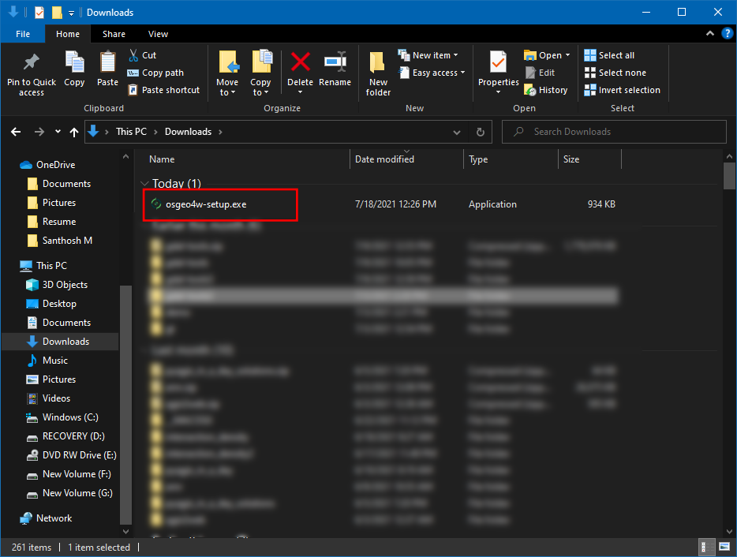
- You will see the Installation steps. Click the OSGeo4W Installer link to start the download.
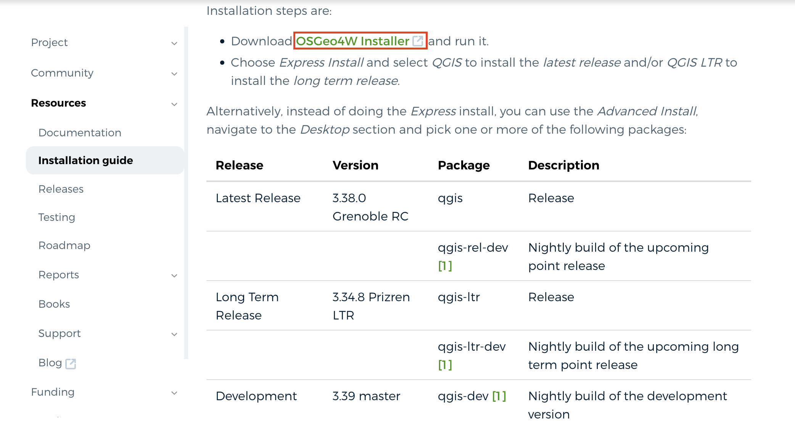
- Once downloaded, double-click the osgeo4w-setup.exe to launch the installer.
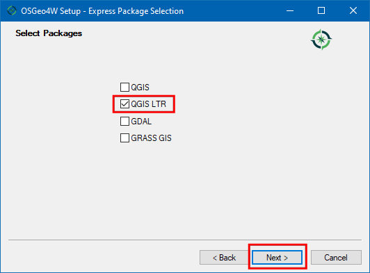
- In the OSGeo4W Setup window, choose Express
Install and click Next. If you are prompted to
Choose a Download Site, select
http://download.osgeo.organd click Next.
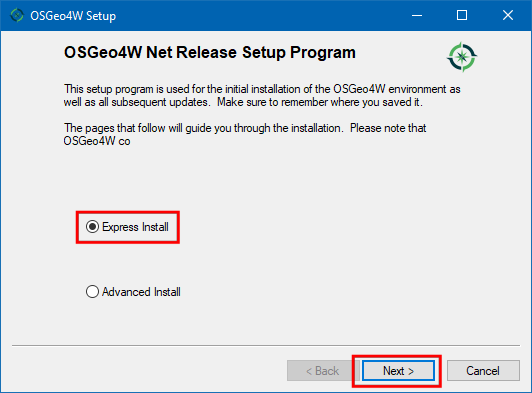
- Select QGIS LTR and click Next.

- Accept all the terms and conditions and click Next. You will have to accept terms for some non open-source packages.
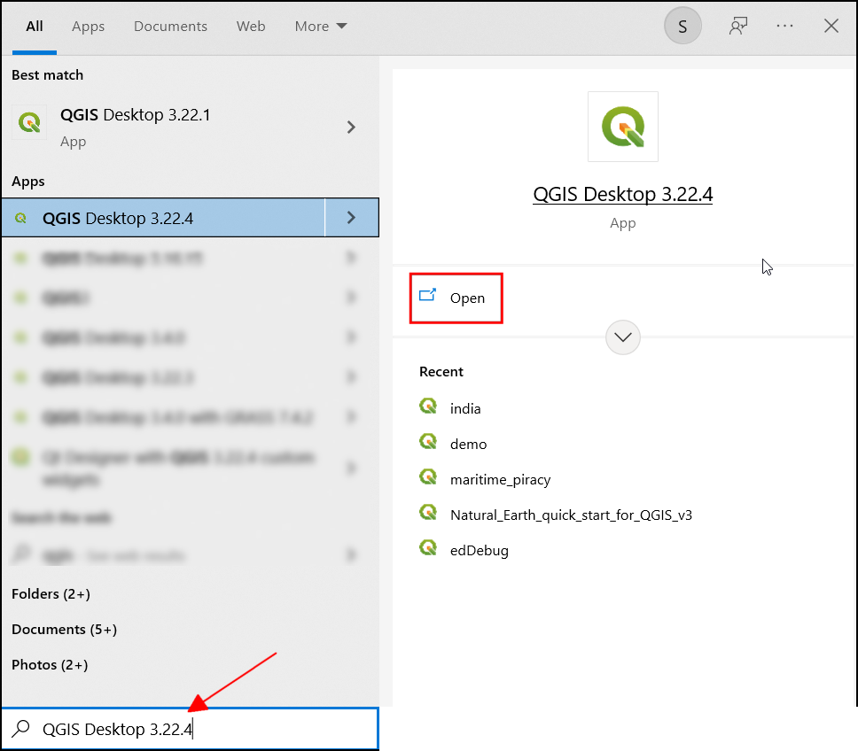
- Download will begin.

- Once the download gets completed, search for QGIS in the Windows Start Menu and choose the QGIS Desktop 3.34, click Open.
You may have a slightly different minor version than shown here. As long as the version number starts with 3.34, it should be fine.

Install QGIS on Mac
There are several different ways to install QGIS on Mac. We recommend the official installers provided by QGIS.org and have provided step-by-step instructions for their installation below.
Official Installers
- Visit the QGIS.org Download page. On the page, you may donate or click on Skip it and go to download to see the download options.
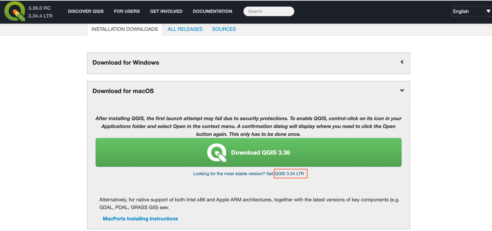
- Go to Download for macOS under Installation Downloads. Click on the Long Term Version for Mac OS (3.34 LTR) to start the download.
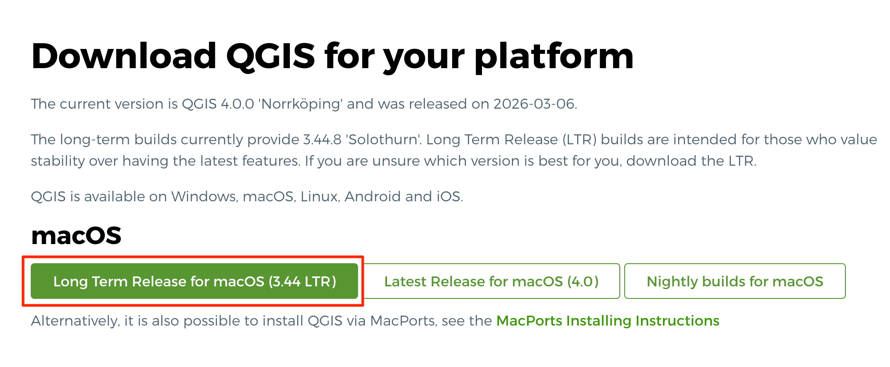
3.Once downloaded, double-click the qgis-macos-ltr.dmg
file to open the package. Drag the QGIS-LTR icon to the
Applications folder.
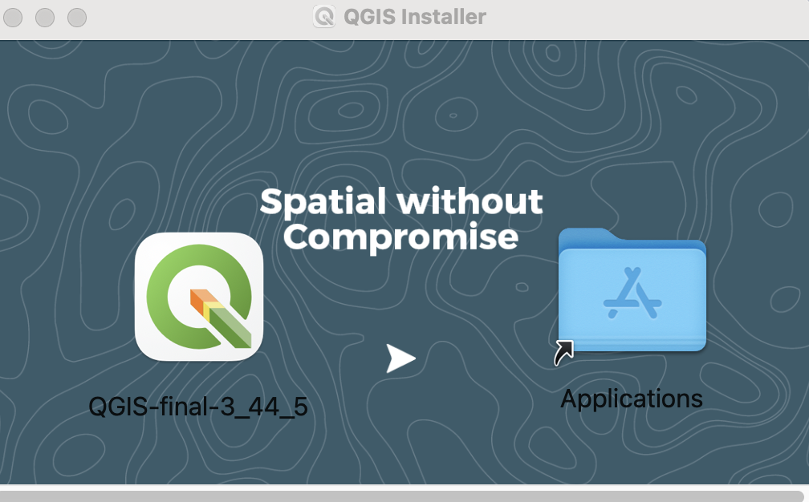
- It will copy QGIS to the Application folder. This process can take up to 15 minutes.

- Once finished, Go to the Applications folder. Find the QGIS-LTR application and double-click to launch it.
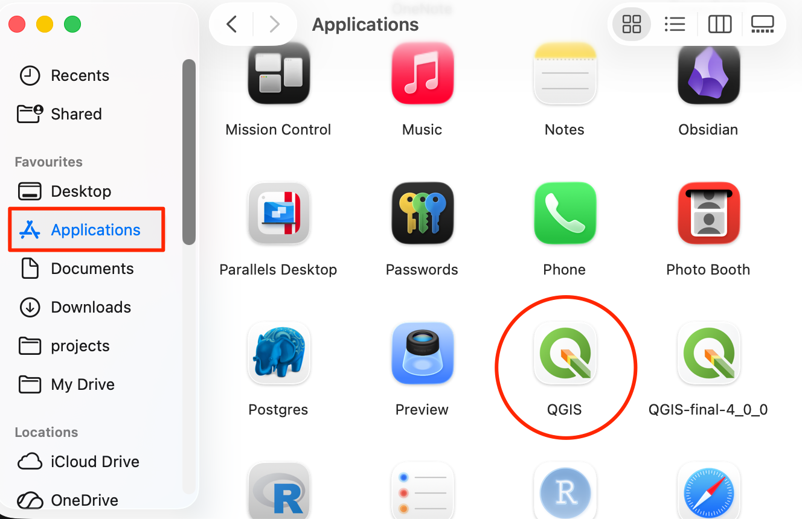
- The first time you launch the program, you will get a warning that “QGIS-LTR” can’t be opened because Apple cannot check for malicious software. Click OK.

- Go to Preferences → Security & Privacy → General. (On newer versions of MacOS, the setting has been moved to System Settings → Privacy & Security → Security). Click the Open Anyway button to launch QGIS. You may have to click the Lock icon and enter your password to enable the button. This step needs to be done only once. The next time, you can launch QGIS-LTR directly from the Applications folder.

Third-party Installers
Offical mac packages provided by QGIS do not come with support for newer data formats (such as GeoParquet) and has older versions of libraries such as PDAL (used for point-cloud processing). If you need these features, you can use the following alternate installation methods.
- MacPorts: Provides native packages for Intel as well as Apple processors. Support for latest libraries and formats. Slightly more complex installation process.
- Conda Installer Packages: Installers based on conda packages. Provides native packages for Intel as well as Apple processors. Allows you to easily manage multiple versions of QGIS on your system. Lacks support for GRASS.
Install QGIS on Ubuntu
QGIS-LTR packages are provided on a variety of Ubuntu versions. The instructions provided here are forUbuntu 22.04 Jammy Jellyfish, but they should work on other versions as well.
- Open a terminal. First install some required packages. Run the following command. You will be prompted for a confirmation, type Y and press Enter.
sudo apt install gnupg software-properties-common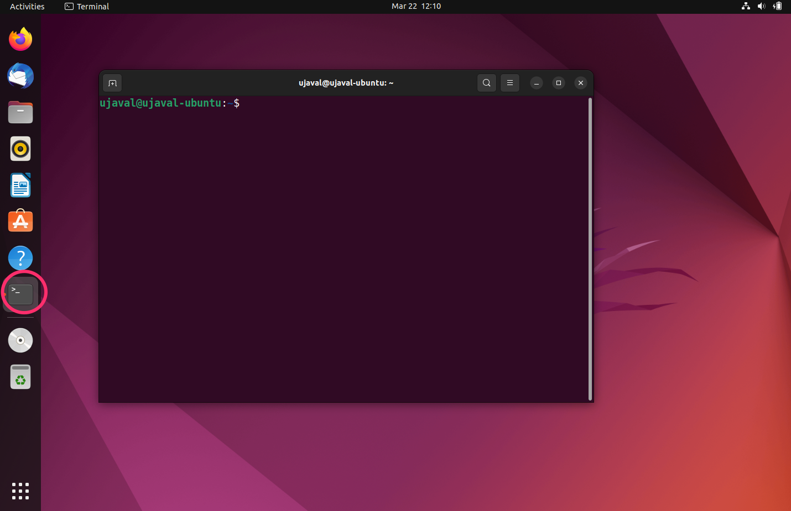
- Next we install the QGIS Signing Key, so QGIS software from the QGIS repo will be trusted and installed
sudo mkdir -m755 -p /etc/apt/keyrings
sudo wget -O /etc/apt/keyrings/qgis-archive-keyring.gpg https://download.qgis.org/downloads/qgis-archive-keyring.gpg
- Now we need the QGIS-LTR repository for the Ubuntu version you are
using. Note that the LTR packages are in the
qgis.org/ubuntu-ltrrepository. If you want the latest version of QGIS instead of LTR, replace it withqgis.org/ubuntu. First runlsb_release -csto check the name of your version. You will need to use that name in the next step. Next, we need to add a new file with the details of the QGIS repository. Here we are using thenanoeditor to edit the file.
sudo nano /etc/apt/sources.list.d/qgis.sources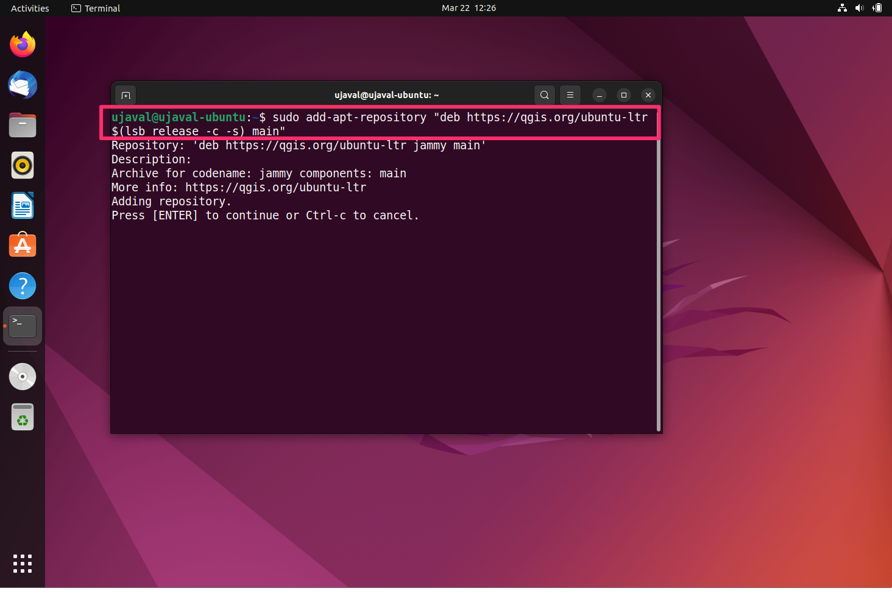
- Paste the following content in the editor. Remember to change
jammywith the name of your ubuntu version. After that pressCtrl+O(Save), now you will be prompted to give a file name. Leave it to default and pressEnter, then pressCtrl+X(Exit).
Types: deb deb-src
URIs: https://qgis.org/ubuntu-ltr
Suites: jammy
Architectures: amd64
Components: main
Signed-By: /etc/apt/keyrings/qgis-archive-keyring.gpg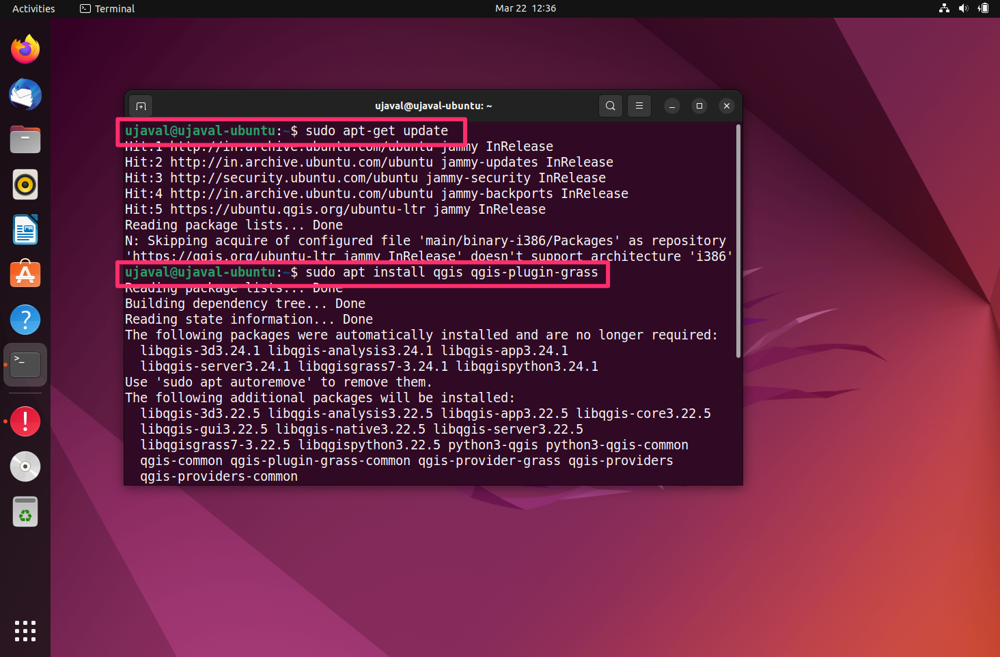
- Update your repository to fetch the information from the newly added repository.
sudo apt-get update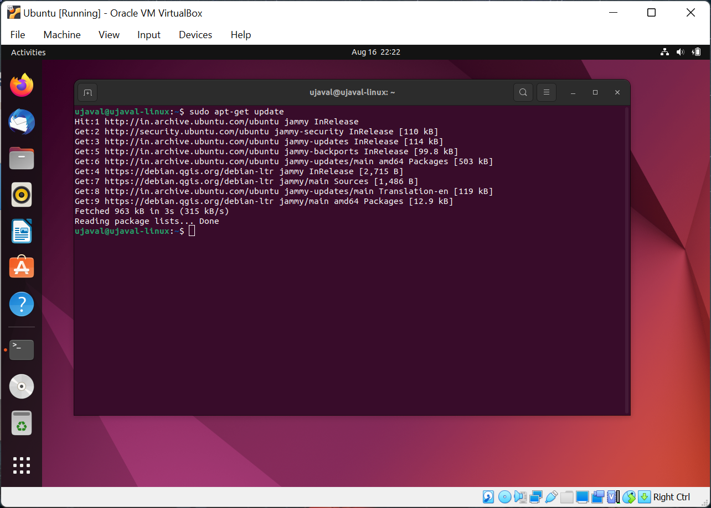
- Once updated, you can install the
qgispackage. Theqgis-plugin-grassis also recommended to get access to GRASS tools within QGIS. You will be prompted for a confirmation, type Y and press Enter.
sudo apt install qgis qgis-plugin-grass
- From Ubuntu Desktop, click the Show Applications button and locate the QGIS application. Click to launch it.

- You now have QGIS-LTR version 3.34 running on your Ubuntu system.

Install QGIS on Linux
QGIS is supported on many linux flavors.
- Ubuntu: Refer to our step-by-step guide.
- Other Distros: Follow the instructions for your distribution from QGIS.org Downloads.
If your distribution does not have a QGIS package, or you are having difficulty with the installation, you can install QGIS via Conda. This is also the preferred method for PyQGIS Development. You not only get all the Python bindings, but also a full QGIS installation with the user interface. Please follow the Using QGIS from Conda guide by Alexander Neto.
To install the QGIS-LTR version from Conda, you must
specify the full version name.
conda install qgis=3.34.4 --c conda-forge
If you want to report any issues with this page, please comment below.